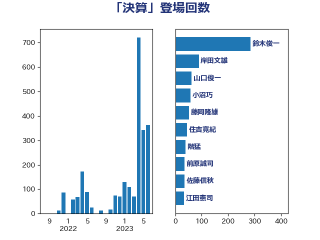

単語「決算」

| 鈴木俊一 | 自由民主党 | 284 回 |
| 岸田文雄 | 自由民主党 | 89 回 |
| 山口俊一 | 自由民主党 | 61 回 |
| 小沼巧 | 立憲民主党 | 58 回 |
| 藤岡隆雄 | 立憲民主党 | 52 回 |
| 住吉寛紀 | 日本維新の会 | 44 回 |
| 階猛 | 立憲民主党 | 38 回 |
| 前原誠司 | 国民民主党 | 34 回 |
| 佐藤信秋 | 自由民主党 | 34 回 |
| 江田憲司 | 立憲民主党 | 33 回 |
| 秋野公造 | 公明党 | 31 回 |
| 松村祥史 | 自由民主党 | 27 回 |
| 羽田次郎 | 立憲民主党 | 24 回 |
| 松本剛明 | 自由民主党 | 24 回 |
| 野田国義 | 立憲民主党 | 22 回 |
| 櫻井周 | 立憲民主党 | 21 回 |
| 井上貴博 | 自由民主党 | 21 回 |
| 細田博之 | 自由民主党 | 20 回 |
| 西村明宏 | 自由民主党 | 19 回 |
| 田村貴昭 | 日本共産党 | 19 回 |
| 永岡桂子 | 自由民主党 | 19 回 |
| 末松義規 | 立憲民主党 | 19 回 |
| 岬麻紀 | 日本維新の会 | 19 回 |
| 加藤勝信 | 自由民主党 | 19 回 |
| 伊東信久 | 日本維新の会 | 19 回 |
| 浜田聡 | NHK党 | 18 回 |
| 原口一博 | 立憲民主党 | 18 回 |
| 金子道仁 | 日本維新の会 | 17 回 |
| 若松謙維 | 公明党 | 16 回 |
| 田中良生 | 自由民主党 | 15 回 |
| 小西洋之 | 立憲民主党 | 15 回 |
| 谷田川元 | 立憲民主党 | 14 回 |
| 柴愼一 | 立憲民主党 | 14 回 |
| 大塚耕平 | 国民民主党 | 14 回 |
| 西村康稔 | 自由民主党 | 13 回 |
| 福田昭夫 | 立憲民主党 | 13 回 |
| 斉藤鉄夫 | 公明党 | 13 回 |
| 和田政宗 | 自由民主党 | 13 回 |
| 伊藤俊輔 | 立憲民主党 | 13 回 |
| 道下大樹 | 立憲民主党 | 12 回 |
| 柴田巧 | 日本維新の会 | 12 回 |
| 清水貴之 | 日本維新の会 | 11 回 |
| 横山信一 | 公明党 | 11 回 |
| 吉良よし子 | 日本共産党 | 11 回 |
| 野田佳彦 | 立憲民主党 | 10 回 |
| 石川博崇 | 公明党 | 10 回 |
| 浜田靖一 | 自由民主党 | 10 回 |
| 武村展英 | 自由民主党 | 10 回 |
| 横沢高徳 | 立憲民主党 | 10 回 |
| 梅村聡 | 日本維新の会 | 10 回 |
| 大野敬太郎 | 自由民主党 | 10 回 |
| 落合貴之 | 立憲民主党 | 9 回 |
| 芳賀道也 | 国民民主党 | 9 回 |
| 米山隆一 | 立憲民主党 | 9 回 |
| 松野博一 | 自由民主党 | 9 回 |
| 馬場成志 | 自由民主党 | 8 回 |
| 重徳和彦 | 立憲民主党 | 8 回 |
| 緒方林太郎 | 無所属 | 8 回 |
| 篠原豪 | 立憲民主党 | 8 回 |
| 福重隆浩 | 公明党 | 8 回 |
| 矢倉克夫 | 公明党 | 8 回 |
| 守島正 | 日本維新の会 | 8 回 |
| 堂込麻紀子 | 無所属 | 8 回 |
| 勝部賢志 | 立憲民主党 | 8 回 |
| 青柳仁士 | 日本維新の会 | 7 回 |
| 西岡秀子 | 国民民主党 | 7 回 |
| 石垣のりこ | 立憲民主党 | 7 回 |
| 田中健 | 国民民主党 | 7 回 |
| 泉健太 | 立憲民主党 | 7 回 |
| 柳ヶ瀬裕文 | 日本維新の会 | 7 回 |
| 市村浩一郎 | 日本維新の会 | 7 回 |
| 山崎正恭 | 公明党 | 7 回 |
| 山井和則 | 立憲民主党 | 7 回 |
| 尾辻秀久 | 無所属 | 7 回 |
| 安江伸夫 | 公明党 | 7 回 |
| 大河原まさこ | 立憲民主党 | 7 回 |
| 塩村あやか | 立憲民主党 | 7 回 |
| 古賀之士 | 立憲民主党 | 7 回 |
| 金子俊平 | 自由民主党 | 6 回 |
| 酒井庸行 | 自由民主党 | 6 回 |
| 福山哲郎 | 立憲民主党 | 6 回 |
| 石井苗子 | 日本維新の会 | 6 回 |
| 田村まみ | 国民民主党 | 6 回 |
| 林芳正 | 自由民主党 | 6 回 |
| 杉尾秀哉 | 立憲民主党 | 6 回 |
| 末次精一 | 立憲民主党 | 6 回 |
| 末松信介 | 自由民主党 | 6 回 |
| 斎藤アレックス | 国民民主党 | 6 回 |
| 小森卓郎 | 自由民主党 | 6 回 |
| 宮本岳志 | 日本共産党 | 6 回 |
| 和田有一朗 | 日本維新の会 | 6 回 |
| 三木圭恵 | 日本維新の会 | 6 回 |
| 鈴木義弘 | 国民民主党 | 5 回 |
| 野村哲郎 | 自由民主党 | 5 回 |
| 紙智子 | 日本共産党 | 5 回 |
| 浅野哲 | 国民民主党 | 5 回 |
| 川合孝典 | 国民民主党 | 5 回 |
| 国定勇人 | 自由民主党 | 5 回 |
| 伊藤渉 | 公明党 | 5 回 |
| 上田清司 | 国民民主党 | 5 回 |
| 齋藤健 | 自由民主党 | 4 回 |
| 音喜多駿 | 日本維新の会 | 4 回 |
| 金子恭之 | 自由民主党 | 4 回 |
| 稲津久 | 公明党 | 4 回 |
| 水岡俊一 | 立憲民主党 | 4 回 |
| 新妻秀規 | 公明党 | 4 回 |
| 岩渕友 | 日本共産党 | 4 回 |
| 岡本三成 | 公明党 | 4 回 |
| 寺田稔 | 自由民主党 | 4 回 |
| 宮口治子 | 立憲民主党 | 4 回 |
| 一谷勇一郎 | 日本維新の会 | 4 回 |
| 金村龍那 | 日本維新の会 | 3 回 |
| 進藤金日子 | 自由民主党 | 3 回 |
| 藤丸敏 | 自由民主党 | 3 回 |
| 荒井優 | 立憲民主党 | 3 回 |
| 福島伸享 | 無所属 | 3 回 |
| 熊谷裕人 | 立憲民主党 | 3 回 |
| 渡辺博道 | 自由民主党 | 3 回 |
| 岸真紀子 | 立憲民主党 | 3 回 |
| 山本剛正 | 日本維新の会 | 3 回 |
| 小沢雅仁 | 立憲民主党 | 3 回 |
| 小池晃 | 日本共産党 | 3 回 |
| 奥野総一郎 | 立憲民主党 | 3 回 |
| 塩川鉄也 | 日本共産党 | 3 回 |
| 伊藤孝恵 | 国民民主党 | 3 回 |
| 井上英孝 | 日本維新の会 | 3 回 |
| 井上哲士 | 日本共産党 | 3 回 |
| 下野六太 | 公明党 | 3 回 |
| おおつき紅葉 | 立憲民主党 | 3 回 |
| 高橋英明 | 日本維新の会 | 2 回 |
| 高橋千鶴子 | 日本共産党 | 2 回 |
| 赤嶺政賢 | 日本共産党 | 2 回 |
| 谷公一 | 自由民主党 | 2 回 |
| 西村智奈美 | 立憲民主党 | 2 回 |
| 藤巻健太 | 日本維新の会 | 2 回 |
| 舞立昇治 | 自由民主党 | 2 回 |
| 笠井亮 | 日本共産党 | 2 回 |
| 稲富修二 | 立憲民主党 | 2 回 |
| 神谷宗幣 | 参政党 | 2 回 |
| 田島麻衣子 | 立憲民主党 | 2 回 |
| 玄葉光一郎 | 立憲民主党 | 2 回 |
| 渡辺周 | 立憲民主党 | 2 回 |
| 浜地雅一 | 公明党 | 2 回 |
| 浜口誠 | 国民民主党 | 2 回 |
| 河野太郎 | 自由民主党 | 2 回 |
| 沢田良 | 日本維新の会 | 2 回 |
| 柿沢未途 | 無所属 | 2 回 |
| 松沢成文 | 日本維新の会 | 2 回 |
| 本庄知史 | 立憲民主党 | 2 回 |
| 木村次郎 | 自由民主党 | 2 回 |
| 川田龍平 | 立憲民主党 | 2 回 |
| 山際大志郎 | 自由民主党 | 2 回 |
| 小野泰輔 | 日本維新の会 | 2 回 |
| 宮本周司 | 自由民主党 | 2 回 |
| 宮崎勝 | 公明党 | 2 回 |
| 大西健介 | 立憲民主党 | 2 回 |
| 大石あきこ | れいわ新選組 | 2 回 |
| 堀内詔子 | 自由民主党 | 2 回 |
| 城井崇 | 立憲民主党 | 2 回 |
| 吉良州司 | 無所属 | 2 回 |
| 前川清成 | 日本維新の会 | 2 回 |
| 伊藤岳 | 日本共産党 | 2 回 |
| 上田勇 | 公明党 | 2 回 |
| 黄川田仁志 | 自由民主党 | 1 回 |
| 鶴保庸介 | 自由民主党 | 1 回 |
| 鰐淵洋子 | 公明党 | 1 回 |
| 高橋光男 | 公明党 | 1 回 |
| 高木宏壽 | 自由民主党 | 1 回 |
| 高市早苗 | 自由民主党 | 1 回 |
| 馬場伸幸 | 日本維新の会 | 1 回 |
| 青柳陽一郎 | 立憲民主党 | 1 回 |
| 長浜博行 | 無所属 | 1 回 |
| 長妻昭 | 立憲民主党 | 1 回 |
| 長友慎治 | 国民民主党 | 1 回 |
| 鈴木憲和 | 自由民主党 | 1 回 |
| 鈴木庸介 | 立憲民主党 | 1 回 |
| 野田聖子 | 自由民主党 | 1 回 |
| 里見隆治 | 公明党 | 1 回 |
| 近藤和也 | 立憲民主党 | 1 回 |
| 越智隆雄 | 自由民主党 | 1 回 |
| 赤木正幸 | 日本維新の会 | 1 回 |
| 谷合正明 | 公明党 | 1 回 |
| 西田昌司 | 自由民主党 | 1 回 |
| 藤原崇 | 自由民主党 | 1 回 |
| 蓮舫 | 立憲民主党 | 1 回 |
| 萩生田光一 | 自由民主党 | 1 回 |
| 若林健太 | 自由民主党 | 1 回 |
| 竹谷とし子 | 公明党 | 1 回 |
| 竹詰仁 | 国民民主党 | 1 回 |
| 穀田恵二 | 日本共産党 | 1 回 |
| 神津たけし | 立憲民主党 | 1 回 |
| 石川香織 | 立憲民主党 | 1 回 |
| 石井啓一 | 公明党 | 1 回 |
| 田村智子 | 日本共産党 | 1 回 |
| 田名部匡代 | 立憲民主党 | 1 回 |
| 田中英之 | 自由民主党 | 1 回 |
| 猪瀬直樹 | 日本維新の会 | 1 回 |
| 牧野たかお | 自由民主党 | 1 回 |
| 牧山ひろえ | 立憲民主党 | 1 回 |
| 片山さつき | 自由民主党 | 1 回 |
| 浮島智子 | 公明党 | 1 回 |
| 浜野喜史 | 国民民主党 | 1 回 |
| 浅田均 | 日本維新の会 | 1 回 |
| 池畑浩太朗 | 日本維新の会 | 1 回 |
| 櫛渕万里 | れいわ新選組 | 1 回 |
| 森本真治 | 立憲民主党 | 1 回 |
| 森山浩行 | 立憲民主党 | 1 回 |
| 梅村みずほ | 日本維新の会 | 1 回 |
| 松本尚 | 自由民主党 | 1 回 |
| 松川るい | 自由民主党 | 1 回 |
| 松原仁 | 立憲民主党 | 1 回 |
| 平木大作 | 公明党 | 1 回 |
| 平山佐知子 | 無所属 | 1 回 |
| 山田勝彦 | 立憲民主党 | 1 回 |
| 小野田紀美 | 自由民主党 | 1 回 |
| 小林史明 | 自由民主党 | 1 回 |
| 小川淳也 | 立憲民主党 | 1 回 |
| 小山展弘 | 立憲民主党 | 1 回 |
| 小倉將信 | 自由民主党 | 1 回 |
| 宮本徹 | 日本共産党 | 1 回 |
| 大野泰正 | 自由民主党 | 1 回 |
| 大島九州男 | れいわ新選組 | 1 回 |
| 堀場幸子 | 日本維新の会 | 1 回 |
| 土田慎 | 自由民主党 | 1 回 |
| 嘉田由紀子 | 無所属 | 1 回 |
| 和田義明 | 自由民主党 | 1 回 |
| 吉田久美子 | 公明党 | 1 回 |
| 古川康 | 自由民主党 | 1 回 |
| 北村経夫 | 自由民主党 | 1 回 |
| 加藤鮎子 | 自由民主党 | 1 回 |
| 伊佐進一 | 公明党 | 1 回 |
| 仁比聡平 | 日本共産党 | 1 回 |
| 仁木博文 | 無所属 | 1 回 |
| 串田誠一 | 日本維新の会 | 1 回 |
| 中川康洋 | 公明党 | 1 回 |
| 中司宏 | 日本維新の会 | 1 回 |
| 世耕弘成 | 自由民主党 | 1 回 |
| 三浦靖 | 自由民主党 | 1 回 |
| ながえ孝子 | 無所属 | 1 回 |
| たがや亮 | れいわ新選組 | 1 回 |